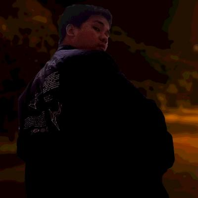

Hi Welcome to my hut
Hi nama saya Iqbal Pradipta, saya merupakan siswa dari DumbwaysID pada Batch 51 Saya berharap disini dapat mempelajari semua hal tentang developer baik dari front-end maupun backend dan saya berharap setelah lulus dari DumbwaysID bisa mendapatkan pekerjaan sebagai Fullstack Developer.
Download CV 

Iqbal Pradipta
Fullstack Developer